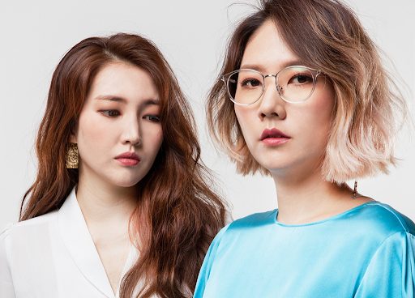

옥상달빛?

옥상달빛은 대한민국의 음악 그룹이다. 1984년생 동갑내기 여성 두 명이 만든 싱어송라이팅 포크 듀오이다. 동아방송예술대학에서 작곡을 전공하고 2008년 《유재하 음악경연대회》에서 장려상을 받은 박세진과 TV 다큐멘터리 그리스의 음악을 맡았던 김윤주가 구성원이다. 홍대 앞 놀이터에서 열리는 프리마켓에서 처음 공연하기 시작한 후 여러 무대에 서 왔다. 최초에는 '동방울 자매'라는 이름으로 노래했으나, 어느 전시장 무대에 선 이들의 모습을 보고 올드피쉬의 SODA가 올드피쉬의 3집 앨범에 참여를 권하며 본격적인 음악인의 길로 첫발을 내디뎠다. 드라마 《파스타》에 삽입된 동명의 노래 〈옥상달빛〉으로 널리 이름을 알리게 되었다. 2010년 EP 앨범 《옥탑라됴》로 가요계에 정식으로 데뷔이후 동시대 청춘들의 감성을 섬세하게 표현한다는 평을 들으며 인기를 쌓아가기 시작했다. 2011년 4월 26일 1집 앨범 《28》 발매. 〈없는게 메리트〉를 타이틀곡으로 하여 EP보다 다양한 편곡과 구성을 보여주었으며, 초도물량이 순식간에 동이나며 꾸준한 판매고를 올리고 있다. 동년 6월 3일~5일동안 진행된 최초의 단독공연 '단독의 메리트'를 3일 전석 매진으로 성공적으로 치렀다.